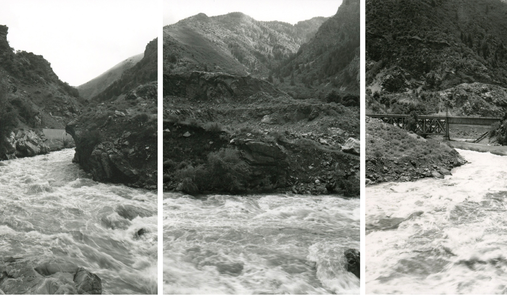
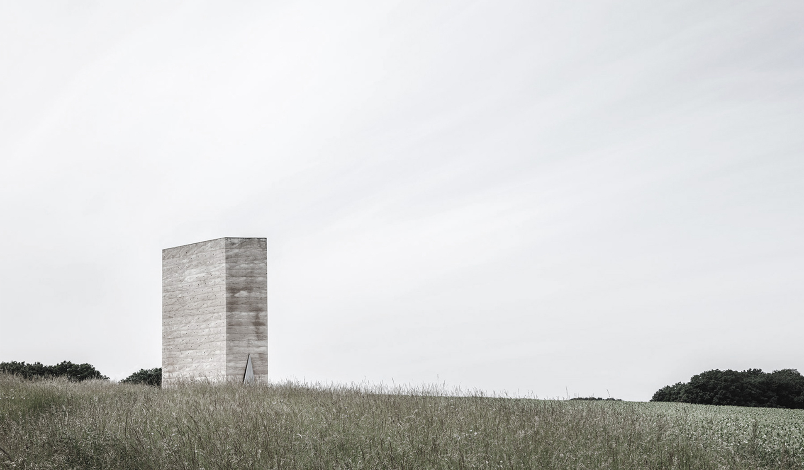

intuitive studio
Priyam Agrawal
feeling spaces

Snow Storm / Painting by J. M. William turner; 1842

Devil’s Gate Triptych / Photograph by Mark Ruwedel

Bruder Klaus Field Chapel / Peter Zumthor
Practice journal
places of the soul
places of the soul


It cannot be merely seen as solutions of pragmatism but is a conscious creation that is extracted from different aspects of our intelligence and personality and thus can be very intuitive in nature. Thus, Functionality of architecture cannot be measured whether or not it is a practical design, but radical consideration of the atmosphere it creates is a a function of design too.

However, I would like to engage with the notion of atmosphere with another added layer that describe it as a perception of a spatial experience. While it is a physical phenomenon, it also suggests an emotion of the space itself, something that would be experienced by one's body and understood in one's consciousness.


To engage with both, the body and the mind, one needs to create an architectural experience that is a result of a subconscious engagement of all senses with the surrounding world. Philospher Bohme suggest the use of the human body not only as a fundamental measure of architecture but also as an instrument which absorbs and considers the architectural quality and the atmosphere of its environment.


This suggests that one’s understanding plays an important role in understanding both the immediate and larger context in which the architecture and the individual self are situated.